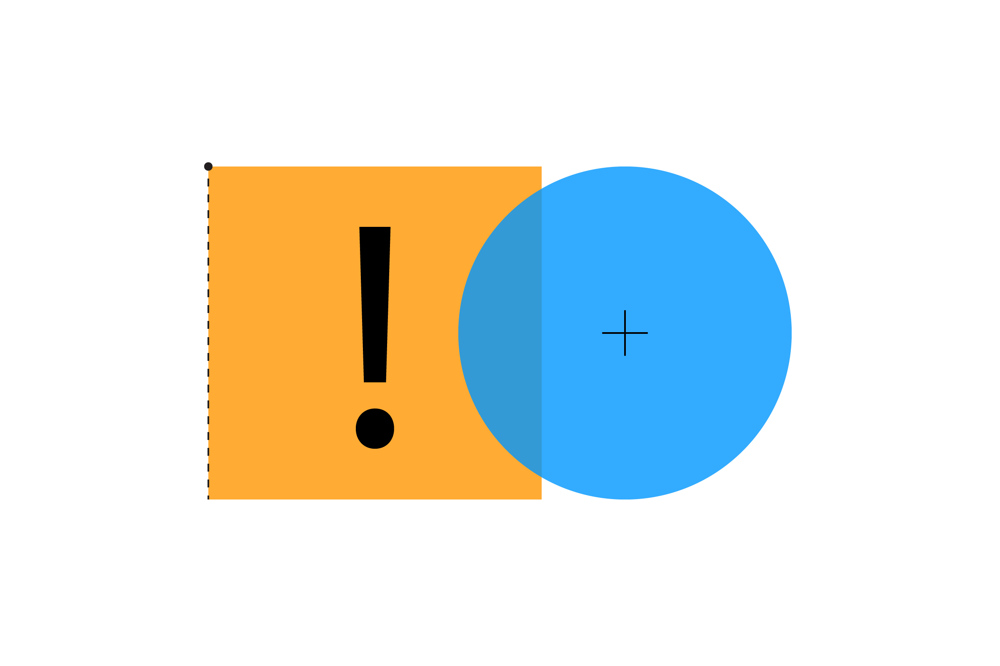

Завдання 2
Спробуйте ці завдання-підказки, щоб змінити код, який ми вже написали:
-
Чи можете ви зробити так, щоб колір об’єкта поступово змінював колір у міру наближення курсора?
Підказка: використовуйте функцію
map()
для перетворення значення відстані у корисний діапазон, який можна застосувати для кольору.
Також для створення для створення плавних переходів кольорів ви можете використовувати функцію
lerpColor().
-
Як згадувалося раніше, приклади з прямокутниками використовували режим малюванню
rectMode(CORNER).
Чи можете ви створити нові версії функцій-перевірок на зіткнення для роботи з режимом
rectMode(CENTER)?
-
Враховуючи інформацію про зіткнення між кругом і прямокутником, ми маємо
достатньо для того, щоб зробити Pong!
Чи можете ви створити просту версію гри з прямокутниками-ракетками та кругом-мʼячиком?
Далі: Лінія і Точка